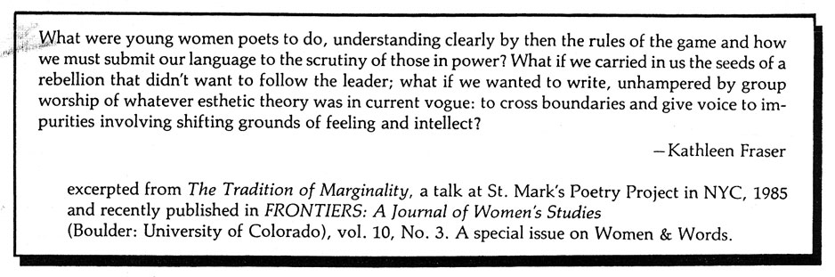

Editors' Notes
"SHIFTING GROUND"--a new topology, questioning the place we occupy or are given. In this issue, HOW(ever) moves production from San Francisco to Iowa City; our editors shift. Central axes (maps of the known world) are radically encountered and re-placed in work such as Trinh T. Minh-ha's where "the female identity enclosure" is unbuilt & reassembled in language dwelling.
For us, "Shifting Ground" echoes an overlay of dislocation /evolving placement. Which language to speak? Which lineage to claim through our literal & literary mothers? Facing the quicksand issues of "home" & native tongue and where to place our selves, our work-- HOW(ever)
tracks where women write [into] words, resisting closure, borders--retelling history, the site of the imagination as it constructs/interrogates. A ground made through exchange. Still to continue.
 --Myung Mi Kim
--Myung Mi Kim
 --Meredith Stricker
--Meredith Stricker


Recently published or soon to appear work: It Then by Danielle Collobert, translated by Norma Cole (O Books). From Potes & Poets Press (181 Edgemont, Elmwood, CT); A Motive For Mayhem by filmmaker/poet Abigail Child; a(gain)2st the odds, by Tina Darragh; How Phenomena Appear To Unfold (essays, plays, interview), by Leslie Scalapino; A Reading (11-17) by Beverley Dahlen (with A Reading (parts 8-10), forthcoming from Lapis Press). Also from Potes & Poets' Abacus series: issue 47: Laura Moriarty; Issue #50: Diane Ward. From Pennywhistle Press: Who Is Alice? by Phyllis Stowall (with an introduction by Sandra Gilbert). Just out from Ahsahta Press: The Woman in Red, by Cynthia Hogue.
•
Modernist/Feminist scholarship: Difference: A Journal of Feminist Cultural Studies. This journal brings together feminism and cultural studies "to provide a forum for an examination of cultural politics and discursive practices informed by feminist criticism." Its first two issues are titled "Life and Death in Sexuality: Reproductive Technologies and AIDS" and "The Essential Difference: Another Look at Essentialism." Constance Penley. The Future of an Illusion: Film, Feminism, and Psychoanalysis (Minneapolis: U of Minnesota Press, 1989). Julia Kristeva. Language: The Unknown: An Initiation into Linguistics. (New York: Columbia UP). Frontiers: A Journal of Women's Studies (Boulder: University of Colorado): Vol 10, No 3. A special issue on Women and Words. Included is Kathleen Fraser's talk on "The Tradition of Marginality," a discussion of women writing: the sources and gathering together of HOW(ever) (see quote on back cover).
HOW(ever), ISSN 0895-5-5743, is available in a fifth series of four numbers. For libraries interested in purchasing the complete series, beginning with Vol. I, we have a limited number of archival sets. Archival sets cost $12 per volume for individuals; $15 for institutions. Subscriptions for Vol. VI cost $10 for individuals; $12 for institutions. Individual copies of HOW(ever), often asked for as "sample copies," are available at $3 each from Small Press Distribution, 1814 San Pablo, Berkeley, CA 94702. Subscription checks for Volume VI of HOW(ever) should be made out to: HOW(ever), c/o Stricker & Kim, 1171 East Jefferson Street, Iowa City, Iowa 52245. $10 (individuals), $12 (institutions).
